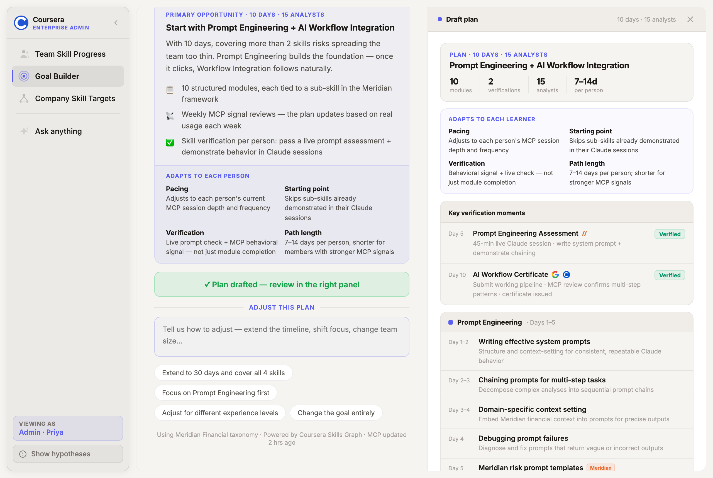
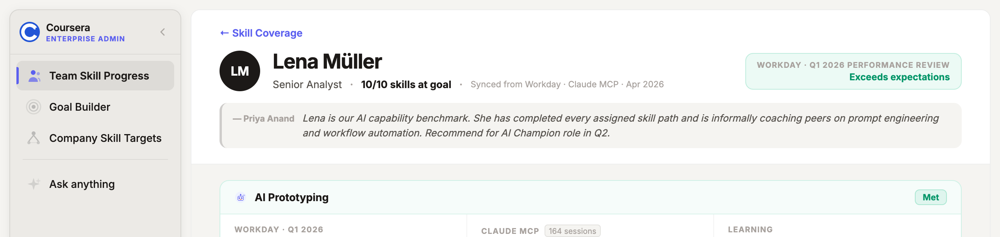

Exploration 01
Ground Truth
The admin layer — build the map, then let behavior fill it in
L&D admins stop managing course catalogs and start managing a living skill graph. They define what good looks like for every role, connect MCP signals relevant to their org, and watch behavioral evidence populate the picture — in real time, without a survey in sight.
Step 01 · Set the target
Intent first.
Not a content catalog.
Admins describe what the team needs to achieve — in plain language. Coursera resolves that to specific skills, pulls from your org's rubrics and files, then maps the actual gap. No browsing. No guessing. You get a targeted plan, not a scroll of courses.


Step 02 · See how the team actually works
MCP replaces the survey.
These aren't self-reported scores. This is a live readout of how a 15-person team is using AI tools at work — pulled directly from Claude sessions over the last 30 days. The gaps write themselves.



Step 03 · Track readiness over time
Every skill becomes a measurable target.
Org goals break down by skill, sub-skill, and team member. The graph shows your team vs. company average over time. Click any node to see who's ready, who has a gap, and what behavioral evidence the system is drawing on. Admins can enrich any node — adding their own rubrics, expectations, or context to the skill graph.